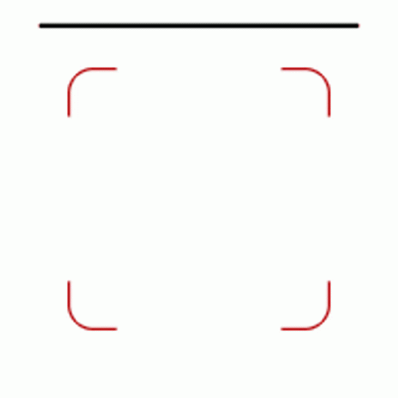

<ion-header>
  <ion-toolbar>
    <ion-title style="text-align: center ;">Escaneo QR</ion-title>
  </ion-toolbar>
</ion-header>

<strong style="background-color:white; text-align:center;">Escaneando QR...</strong>



<strong style="background-color: white; text-align:justify;">No mueva la cámara mientras se escanee el QR</strong>
<ion-content>
</ion-content>
